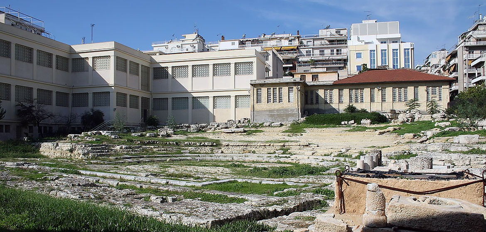

Τρούμπα
Η Τρούμπα ήταν η πιο κακόφημη συνοικία του Πειραιά, επί σειρά ετών, καθώς ήταν γνωστή για τους οίκους
ανοχής και τα καμπαρέ που διέθετε.
Η περιοχή πήρε το όνομά της από την αντλία (τρόμπα) που ήταν τοποθετημένη από το 1860 σε πηγάδι,
στην περιοχή αυτή, στην αρχή της οδού Αιγέως, (σημερινής 2ας Μεραρχίας) στον Πειραιά και εφοδίαζε με
νερό τα πλοία.
Η Τρούμπα ήταν στις δόξες της τη δεκαετία του ’50 – ’60 και η «χρυσή εποχή» της κράτησε περίπου 20
χρόνια, ενώ στους δρόμους της βρίσκονταν τα πιο διάσημα «κακόφημα» καμπαρέ που άφησαν εποχή, όπως το
«Τζων Μπουλ» και το «Μπλακ Κατ» που με στριπτιζ και κονσομασιόν προσπαθούσαν να ικανοποιήσουν τους
απαιτητικούς πελάτες.
Παράλληλα στην Τρούμπα μεγαλούργησαν και πολλοί γνωστοί ρεμπέτες, ο Μάρκος Βαμβακάρης ο Παπαϊωάννου,
ο Κερομύτης και ο Νίκος ο Πουνέντης. Μέρα και βράδυ από όποιο καφενείο πέρναγες, άκουγες μπουζούκι
και μπαγλαμά και ένιωθες την μυρωδιά του χασίς από ναργιλέ και από τσιγαριλίκι. Όσοι έπαιζαν
μπουζούκι, συνήθως ήταν άνθρωποι της τούφας και το είχαν μάθει στη φυλακή.
Το 1967 απαγορεύτηκαν όλες οι δραστηριότητες στην περιοχή
Το 1967 ο τότε δήμαρχος Πειραιά Αριστείδης Σκυλίτσης αποφασίζει την απαγόρευση όλων των
δραστηριοτήτων στην περιοχή, αφού πέραν των συνθηκών που είχαν δημιουργήσει γκέτο για τους
Πειραιώτες, η εγκατάσταση ναυτιλιακών εταιρειών στην Ακτή Μιαούλη ήταν μία καλή ευκαιρία για
αναδόμηση, εκκαθάριση και ανάπτυξη της περιοχής. Μέχρι το 1970 το λιμενικό είχε πλέον τον πλήρη
έλεγχο, ενώ τα περισσότερα νυχτερινά κέντρα και τα καταγώγια της εποχής κατεδαφίστηκαν. Σήμερα στην
περιοχή στεγάζονται το δικαστικό Μέγαρο Πειραιά και Διευθύνσεις του ΝΑΤ και του Υπουργείου
Ναυτιλίας.

Αρχαιολογικό Μουσείο του Πειραιά
Το Αρχαιολογικό Μουσείο του Πειραιά προσφέρει στον επισκέπτη την αντιπροσωπευτική και πλήρη εικόνα
της ιστορίας της πόλης, που κατά την αρχαιότητα γνώρισε μεγάλη ακμή τόσο ως εμπορικό κέντρο της
ανατολικής Μεσογείου όσο και ως πολεμικός ναύσταθμος της αρχαίας Αθήνας. Το είδος των εκθεμάτων του,
που προέρχονται κυρίως από την ευρύτερη περιοχή του Πειραιά και της αττικής παραλίας, και τα χρονικά
όρια που καλύπτουν, από τη μυκηναϊκή έως και τη ρωμαϊκή εποχή, είναι αντιπροσωπευτικά της
ιδιομορφίας, της σύνθεσης του πληθυσμού και της ιστορίας του Πειραιά. Οι συλλογές του μουσείου
αποτελούνται κυρίως από ευρήματα ανασκαφών ή τυχαία ευρήματα και από παραδόσεις αρχαιοτήτων, ενώ
έχουν εμπλουτισθεί και με τις δωρεές ιδιωτικών συλλογών, όπως της συλλογής Μελετοπούλου-Νομίδου και,
πιο πρόσφατα, της Συλλογής Γερουλάνου.
Το μουσείο στεγάζεται σε διώροφο κτήριο, που πλαισιώνει στη δυτική και νότια πλευρά το ελληνιστικό
θέατρο της Ζέας και έχει συνολικό εμβαδόν 1.394 τ.μ. Οι εκθεσιακοί του χώροι καταλαμβάνουν τις δέκα
αίθουσες των δύο ορόφων (1.044 τ.μ.), ενώ στο υπόγειο (350 τ.μ.) βρίσκονται τα εργαστήρια συντήρησης
πήλινων, μεταλλικών και λίθινων αντικειμένων, καθώς και η αποθήκη του μουσείου, όπου φυλάσσονται
αρχαιολογικά ευρήματα από την περιοχή του Πειραιά, την παραλιακή ζώνη και τα νησιά. Το κτήριο του
παλαιού μουσείου (330 τ.μ.), που βρίσκεται ακριβώς δίπλα, χρησιμοποιείται σήμερα ως αποθήκη γλυπτών,
ενώ στον αρχαιολογικό χώρο του θεάτρου της Ζέας πρόκειται να λειτουργήσει υπαίθρια έκθεση γλυπτών.
Τείχη Πειραιά
Τα τείχη και οι πύλες του αρχαίου Πειραιά
Τα ερείπια των οχυρώσεων βρίσκονται σε καλή κατάσταση ως σήμερα. Το 493 π.Χ. ο Θεμιστοκλής ξεκίνησε
την κατασκευή οχυρώσεων γύρω από τον Πειραιά. Οι δύο κύριες πύλες των οχυρώσεων βρίσκονται στην
είσοδο της σύγχρονης πόλης στην οδό του 34ου Συντάγματος. Η Πύλη του Άστεως είναι η πιο δυτική πύλη,
η οποία περικλείεται από τις οδούς Πύλης, Ομηρίδου, Σκλυλίτση και Κολοκοτρώνη. Ο κύριος δρόμος για
τις μεταφορές προς την Αθήνα περνούσε μέσα από την Πύλη του Άστεως.
Τα Μακρά Τείχη και η Μέση Πύλη.
Ο σκοπός κατασκευής των Μακρών Τειχών ήταν η σύνδεση της Αθήνας με το επίνειό της. Τα Μακρά Τείχη
(Βόρειο, Φαληρικό και το Μέσο ή Νότιο τείχος) δημιουργούσαν έναν ασφαλή διάδρομο ανάμεσα στην Αθήνα
και τον Πειραιά για τον πληθυσμό της Αττικής κατά τον Πελοποννησιακό Πόλεμο. Η Μέση Πύλη, κοντά στην
Πύλη του Άστεως, είναι πολύ παρόμοια με το Δίπυλον της Αθήνας, αλλά μικρότερη. Είχε κατασκευαστεί
για διακίνηση χρησιμοποιώντας τον διάδρομο των Μακρών Τειχών. Η Ηετιώνεια Πύλη βρίσκεται στη βορεινή
πλευρά του κύριου λιμένα, του Κάνθαρου, στην περιοχή της Δραπετσώνας. Το φρούριο της Ηετιωνείας
κατασκευάστηκε με σκοπό τον έλεγχο του λιμανιού. Δύο τμήματα του τείχους ξεκινούν απ’ αυτή την πύλη.
Η πρώτη στα ανατολικά προς τον λιμένα. Η δεύτερη προς τον εξωτερικό λιμένα. Δύο ισχυροί κυκλικοί
πύργοι της ελληνιστικής περιόδου ορθώνονταν στα πλευρά της πύλης. Το τείχος προστατεύεται από μια
βαθιά τάφρο σκαμμένη μέσα στον βράχο.
Ο παράκτιος τομέας των οχυρώσεων. Κατασκευάστηκε από τον Κόνωνα το 394 π.Χ. και διατηρείται, ως
σήμερα, ένα τμήμα του μήκους 2,5 χλμ. κατά μήκος της Πειραϊκής Ακτής. Πολλοί από τους πύργους του
τείχους διατηρούνται ως σήμερα.
Δηµοτικό Θέατρο
Το Δηµοτικό Θέατρο βρίσκεται στο κέντρο της πόλης και κτίστηκε σε σχέδια
πιστής αντιγραφής του περίφημου θεάτρου Μπολσόι στη Μόσχα. Ο αρχιτέκτονας του έργου υπήρξε ο
καθηγητής του Εθνικού Μετσόβιου Πολυτεχνείου Ιωάννης Λαζαρίμος.
Το Δημοτικό Θέατρο Πειραιά, κάνει τα επίσημα εγκαίνιά του, την Κυριακή του Θωμά στις 9 Απριλίου
1895, στις 10.30 το πρωί, μετά "περισσής λαμπρότητος". Η πρόσοψη του θεάτρου είχε διαμορφωθεί έτσι
ώστε να μπορούν με ευκολία να παρκάρουν οι "βηκτώριες άμαξες" και τα λεγόμενα "Βιζ-α-βί", λεωφορεία
της εποχής.
Το λευκό οικοδόμημα με το ναόσχημο πρόπυλο και τις τέσσερεις λεπτές - χωρίς ραβδώσεις -
κορινθιακού τύπου κολώνες στην πρόσοψή του, γίνεται σημείο αναφοράς της πολιτιστικής ζωής της πόλης
τόσο στον 19ο όσο και τον 20ο αιώνα.
Μορφολογικά, έχει τις αναφορές του στην αμιγή κλασικιστική παράδοση και είναι επηρεασμένο από τη
γερμανική σχολή που εκπροσωπούσε ο Ερνέστος Τσίλερ.
Η σκηνή του θεάτρου θεωρείται ένα από τα ελάχιστα σωζόμενα δείγματα της εποχής μπαρόκ στην Ευρώπη,
διαθέτει προσκήνιο και χώρο ορχήστρας ενώ η πλατεία, τα θεωρεία και οι εξώστες εξελίσσονταν σε
τέσσερα επίπεδα. Την αίθουσα φώτιζε τεράστιος πολυέλαιος (σώζεται και σήμερα) που λειτουργούσε με
γκάζι.